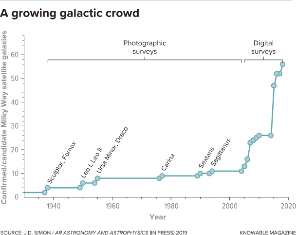

在这个大宇宙中，它很容易感觉小而微不足道，好像我们的星球，我们的星星，我们的天体邻居没有什么特别之处。毕竟，太阳只是银河系中数千亿颗恒星中的一颗。我们要吹嘘什么？
然而，众所周知的天文学家早已意识到我们的银河系是特殊的。悉尼大学的天文学家乔斯·布兰德 - 霍索恩（Joss Bland-Hawthorn）在“天文学和天体物理学年度评论”2016年的一篇文章中帮助编制了该星系的重要统计数据，仅凭尺寸，它就“存在于所有星系的最高百分位”。 。他将银河系的质量放在了太阳的1.0万亿到1.6万亿倍之上，超过了其绝大多数同行的10倍到100多万倍，并且大大超过了它们。
然而，这种光彩并不明显。通过望远镜观察，你看到的大多数星系的大小，亮度和质量都与我们相当。众所周知的星系，如仙女座星系和漩涡花都是恰当的例子。
但这只是因为这些突出的星系辐射的光线和我们自己的光线一样多，这使得它们很容易看到，即使是在很远的距离。这给人的印象是银河系是平均的，当它实际上是一个庞然大物。稀有巨人对星系的评判就像用你在报纸头版看到的着名名字来评价人们。对于人类和星系来说，通过查看最近的邻居，您可能会获得更具代表性的样本。
附近有新的星系
为了了解银河系如何适应广泛的星系，天文学家必须调查所有类型的星系，从明亮到昏暗。通过最接近我们自己的方式，我们可以最容易地发现这一点，在那里我们甚至可以探测到最暗和最微弱的星系。近年来，这一搜索引起了附近已知星系数量的爆炸式增长。
1938年，当哈佛大学的天文学家哈洛·沙普利（Harlow Shapley）无意中迈出了摧毁银河系是普通星系这一概念的第一步时，我们的银河系邻居的清晰画面开始浮现。在看着一个不起眼的南方星座Sculptor的摄影板时，他发现了一个微弱的污迹。他认为只是一个指纹或其他缺陷，直到同一个星座的第二个摄影板显示出同样的污点。不久之后，他在邻近的Fornax星座发现了另一个污点。
Sculptor和Fornax的污迹是一种新型的星系：天文学家现在称之为矮星球的幽灵。昏暗和漫射，他们的星星彼此分开，他们并没有完全通过望远镜召唤。两者都是我们最接近的星系邻居 - 事实上它们如此接近，以至于它们绕着银河轨道运行，就像卫星绕行星运行一样，使它们成为我们自己的卫星星系。 Sculptor Dwarf Spheroidal距地球280,000光年，而Fornax Dwarf Spheroidal距离455,000光年。他们很朦胧。虽然银河系的光线散射量是太阳的300亿倍，但Sculptor仅产生180万个太阳光度，而Fornax只有1900万个。

在Shapley发现之后的几十年里，天文学家发现了围绕银河系旋转的其他矮星球星系。随着技术的进步，新的发现越来越小，越来越不显眼。 1990年在Sextans星座中标志着一颗矮小的球状星球，这是一个银河的失败者，它需要一台计算机才能发现它。剑桥大学的天文学家迈克欧文说，如果没有一个，“就不会找到塞克斯坦人”。 “用眼睛发现几乎是不可能的。”计算机在摄影板上检测到了微妙的恒星浓度。所有都以相同的速度行进并且出现在相同的距离，表明它们属于同一个暗淡的星系，离地球310,000光年。
Sextans Dwarf Spheroidal是发现绕银河系运行的第10个星系。因此，到1990年，我们的星系是一个帝国的中心，包括11个已知的星系：本身，8个矮星球，以及2个更大更明亮的卫星星系，大麦哲伦星云和小麦哲伦星云。
超微弱星系的兴起
2005年，在天空大面积探测到一种新型星系之后，已知的银河系卫星的数量开始飙升，天文学家称之为超微弱的矮星，甚至比矮小的球体更小，更暗。加州帕萨迪纳卡内基天文台的天文学家约什·西蒙在2019年的天文学和天体物理学年度报告中写道，加入超微弱系统可以将所有已知的银河系卫星星系的数量增加到50多个。大多数是超微弱的矮人;一切都比银河系更暗。去年，西蒙发现了一个惊人的发现，暗示有更多的卫星星系在等待探测。
在绘制了银河系周围超微弱星系的位置后，西蒙得出了这个结论。正如每颗行星围绕太阳在椭圆轨道上旋转一样，每颗银河卫星都围绕银河系中心围绕椭圆轨道旋转。正如重力导致行星在离太阳最近的时候移动速度最快，因此卫星星系在离银河系最近的时候会加速，并在最远的地方减速。因此，在任何特定时间，大多数卫星星系都应该绕其轨道中最远的点徘徊。
但西蒙发现了一些不同的东西 - 他分析的17颗超微弱矮星卫星中的大多数都接近它们的近点。他说，最自然的解释是，科学家们只看到了大量超微弱星系中的一小部分，其中大部分是在它们的轨道远点处。但是因为它们距离更远，更难以看到，这些额外的星系到目前为止还没有发现，西蒙的原因。
“在接下来的10年左右，我认为[卫星]星系的数量将会大幅增加，”剑桥大学的天文学家瓦西里·贝洛库罗夫说，他的团队已经出现了许多新的星系。他怀疑银河系大约有200个;西蒙说：“即使是最保守的估计，这个数字也只有100个。这使得银河系在银河系中更加突出，位居前1％。”所有星系中99％的星系都会更小，更暗，更小 - 给我们的银河之家是任何对星系进行评分的宇宙老师的A-plus。如果总卫星数量高达200，我们将处于前0.5％。
简而言之，我们生活在一个比宇宙中大多数其他星系更大，更亮，更大的星系中。 而且，如果存在的话，宇宙中的大多数其他生命形式也是如此。 那是因为聚集在宇宙中的小星系拥有如此少的恒星; 我们自己的星系拥有的恒星比围绕它旋转的所有星系都要多得多。 因此，就纯数而言，如果每颗恒星都有一颗完全像地球并且充满生命的行星，那么宇宙中的大多数生物都可能存在于远高于平均值的星系中。
因此，下一次你在全新的星系中超越星际空间 - 仅仅是二十三世纪的星舰 - 你就可以吹嘘你遇到的银河系以外的任何外星人，你来自巨大的星系。 但是机会也是如此，他们也是如此。